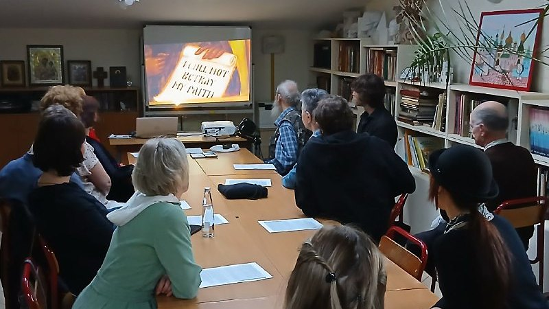

English and faith at one table. 🕊 The Orthodox Christian Discussion Club is an English-speaking club at the Moscow Representation of the Valaam Monastery. Every Monday evening participants read and discuss texts of the Holy Fathers, lives of the saints and questions of Christian life — all in English.
It's a quiet, thoughtful club for those who want to talk about deep things and at the same time grow their English vocabulary far beyond everyday small talk. The 2026/27 season started in September.
Our Format
Format: a discussion around a text — for example, the teachings of St. Theodore the Sanctified or the Holy Fathers' reflections on the Resurrection, idle talk or vainglory.
📖 Vocabulary: before or after the meeting the channel posts a word list with translations — parable, devout, layman, asceticism, to lead astray — so you can prepare and revise.
💬 Topics: spiritual life, Church history, saints and Orthodoxy around the world — from Valaam to Alaska.
Where we meet
| Day | Venue | Address |
|---|---|---|
| Monday, 19:30 | Moscow Representation of the Valaam Monastery | 2-ya Tverskaya-Yamskaya ul., 52 (m. Belorusskaya / Mayakovskaya) |
There's no meeting on major church feast days — check the channel before you go.

Special Formats
🎬 Film Screenings
The club has hosted special screenings in English — for example, the pre-screening of the documentary "American Orthodox" (2025) about spiritual journeys, miracles and holy places in North America.
Registration
No registration needed — just come on Monday evening.
- Venue website: mospodvorie.ru
- Club channel: @orthodox_christian_discussions
God willing — see you on Monday! ✨